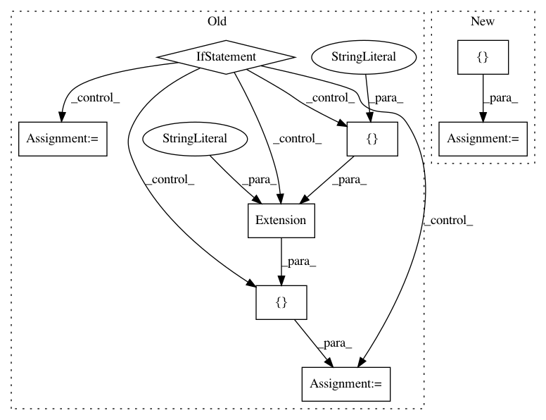

f05bcbbd5498a38610ddc7e199d97ec3fc489c4f,setup.py,,,#,4
Before Change
except ImportError:
from distutils.command.build_ext import build_ext as _build_ext
if have_cython:
ext = [
Extension("tslearn.cydtw", ["tslearn/cydtw.pyx"]),
Extension("tslearn.cygak", ["tslearn/cygak.pyx"]),
Extension("tslearn.cylrdtw", ["tslearn/cylrdtw.pyx"]),
Extension("tslearn.cysax", ["tslearn/cysax.pyx"]),
Extension("tslearn.cycc", ["tslearn/cycc.pyx"])
]
else:
ext = [
Extension("tslearn.cydtw", ["tslearn/cydtw.c"]),
Extension("tslearn.cygak", ["tslearn/cygak.c"]),
Extension("tslearn.cylrdtw", ["tslearn/cylrdtw.c"]),
Extension("tslearn.cysax", ["tslearn/cysax.c"]),
Extension("tslearn.cycc", ["tslearn/cycc.c"])
]
After Change
if have_cython:
ext = [Extension("tslearn.%s" % s, ["tslearn/%s.pyx" % s]) for s in list_pyx]
else:
ext = [Extension("tslearn.%s" % s, ["tslearn/%s.c" % s]) for s in list_pyx]
setup(
name="tslearn",
description="A machine learning toolkit dedicated to time-series data",
In pattern: SUPERPATTERN
Frequency: 3
Non-data size: 8
Instances
Project Name: rtavenar/tslearn
Commit Name: f05bcbbd5498a38610ddc7e199d97ec3fc489c4f
Time: 2017-06-15
Author: romain.tavenard@univ-rennes2.fr
File Name: setup.py
Class Name:
Method Name:
Project Name: theislab/scanpy
Commit Name: 2765758171060d13058a1e36233a651e34299fc5
Time: 2017-04-30
Author: flying-sheep@web.de
File Name: setup.py
Class Name:
Method Name:
Project Name: theislab/scanpy
Commit Name: cbecbe8eea332fae79c544e69631761f45a247ed
Time: 2017-08-30
Author: flying-sheep@web.de
File Name: setup.py
Class Name:
Method Name: